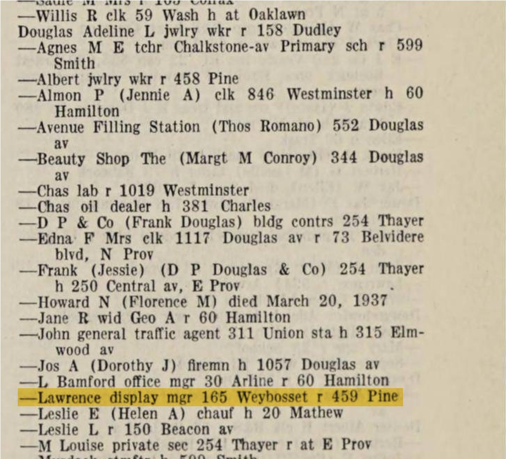

Item 31 · 1938
Providence city directory, 1938, page 563
The document


This copy carries yellow highlighting or red outlining added for the book site. It is not on the original.
The second image is an enlarged section of the same document.
Tap an image to open it full size.
Transcription, word for word
Everything as written, including misspellings. [?] marks an uncertain reading. Struck-through words are marked as struck through. Notes in square brackets describe the page and are not part of it.
[A full directory page in very small type. The Douglas entries shown enlarged on the copy are given word for word below; the rest of the page is too small on this copy to transcribe word for word. The page image is above.] [Page number] 563 [Advertisement across the top] TITLE GUARANTEE COMPANY of RHODE ISLAND. Insurance Against Flaws in Real Estate Titles. SEE PAGE 3 [Enlarged section] —Sadie M Mrs r 105 Colfax [partly cut off] —Willis R clk 59 Wash h at Oaklawn Douglas Adeline L jwlry wkr r 158 Dudley —Agnes M E tchr Chalkstone-av Primary sch r 599 Smith —Albert jwlry wkr r 458 Pine —Almon P (Jennie A) clk 846 Westminster h 60 Hamilton —Avenue Filling Station (Thos Romano) 552 Douglas av —Beauty Shop The (Margt M Conroy) 344 Douglas av —Chas lab r 1019 Westminster —Chas oil dealer h 381 Charles —D P & Co (Frank Douglas) bldg contrs 254 Thayer —Edna F Mrs clk 1117 Douglas av r 73 Belvidere blvd, N Prov —Frank (Jessie) (D P Douglas & Co) 254 Thayer h 250 Central av, E Prov —Howard N (Florence M) died March 20, 1937 —Jane R wid Geo A r 60 Hamilton —John general traffic agent 311 Union sta h 315 Elmwood av —Jos A (Dorothy J) firemn h 1057 Douglas av —L Bamford office mgr 30 Arline r 60 Hamilton —Lawrence display mgr 165 Weybosset r 459 Pine —Leslie E (Helen A) chauf h 20 Mathew —Leslie L r 150 Beacon av —M Louise private sec 254 Thayer r at E Prov —Murdock stmftr h 599 Smith [partly cut off]